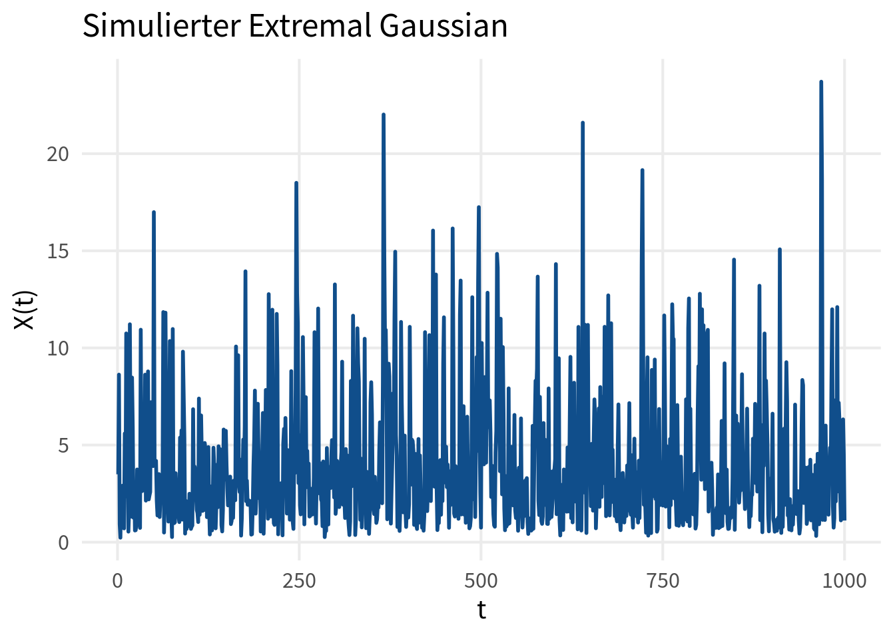
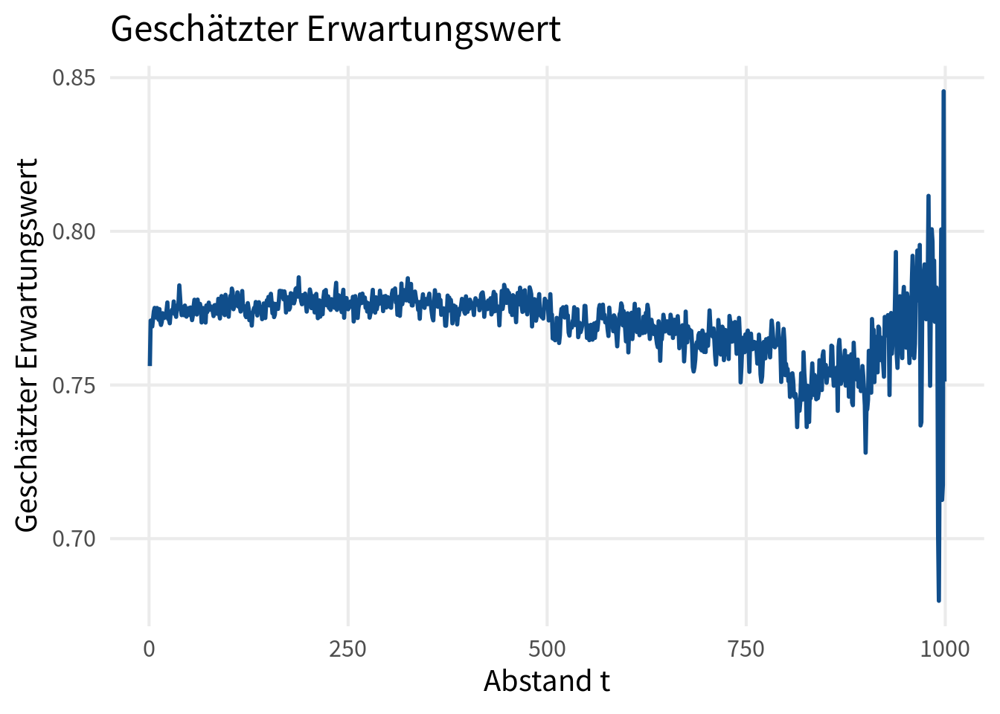
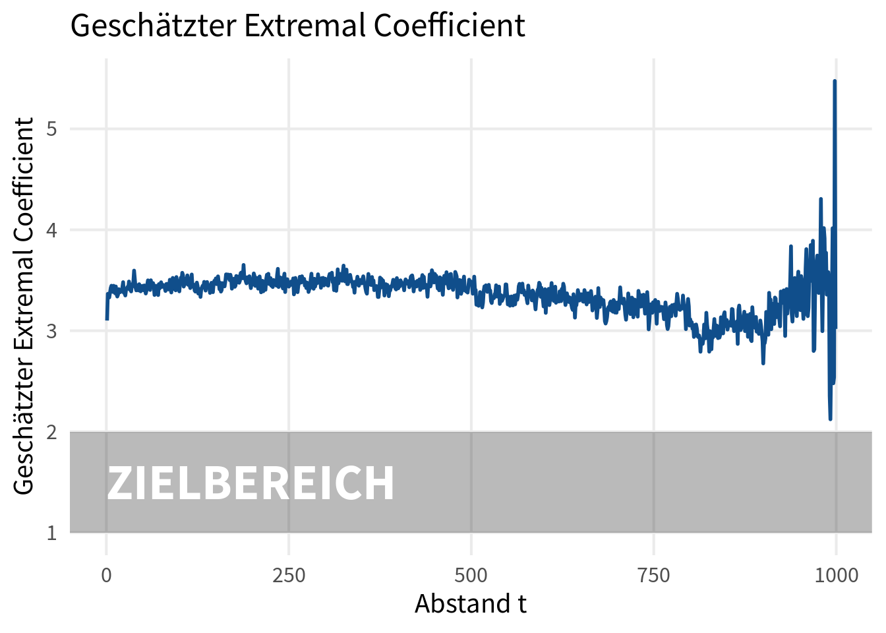
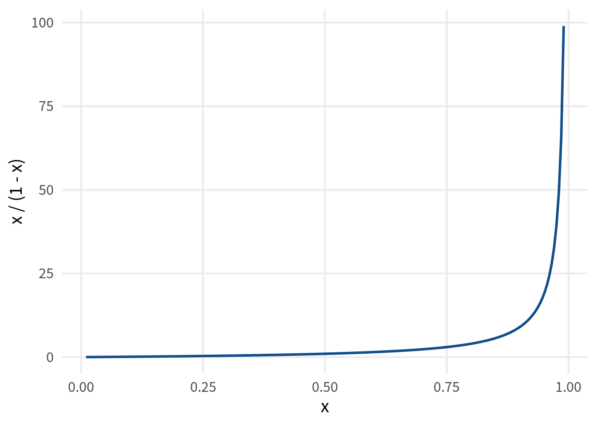
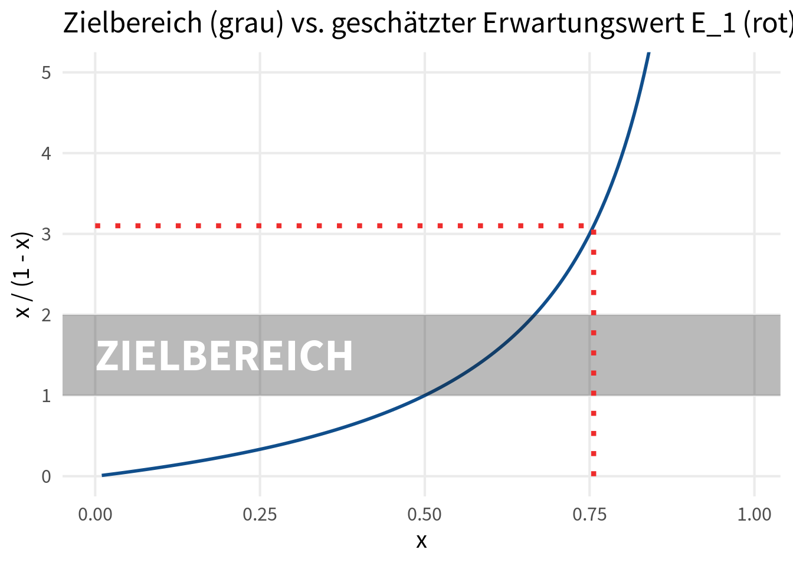
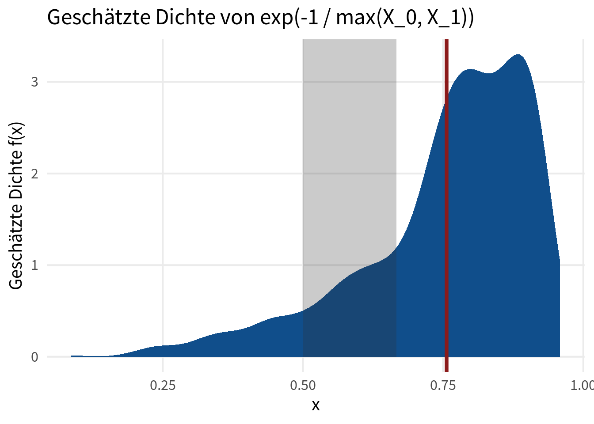
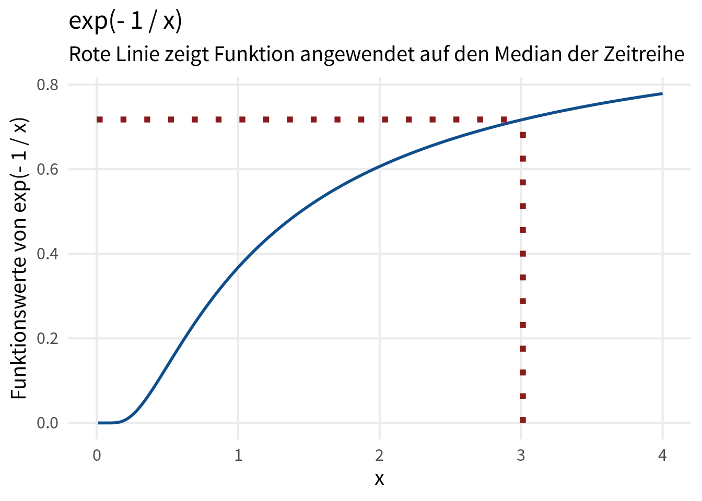
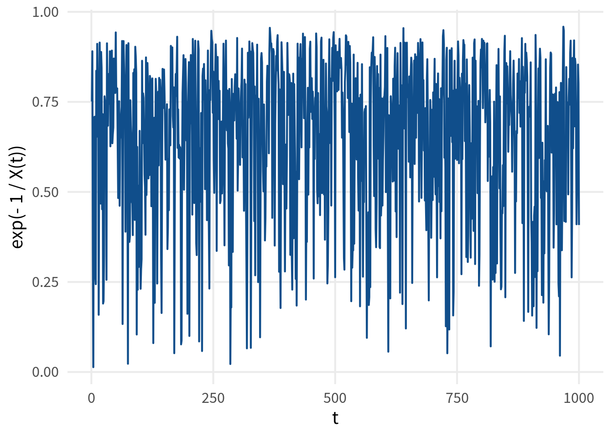
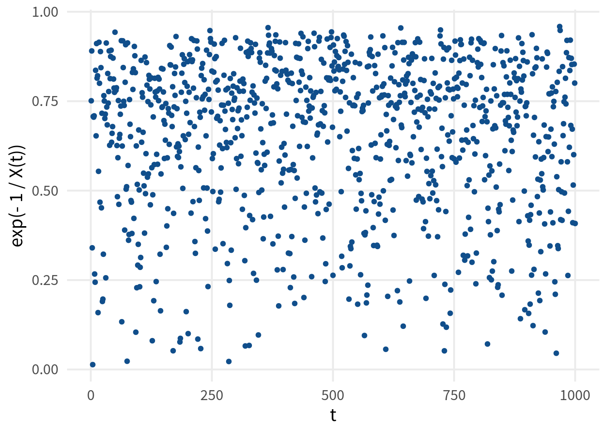
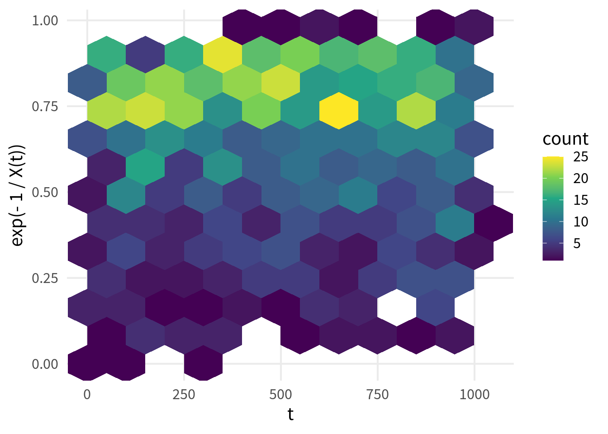

Schätzbericht
Als erstes simulieren wir eine Zeitreihe eines extremal Gaussian process.
library(tidyverse)
library(RandomFields)
set.seed(2452454)
xs <- 1:1000
max_stable_simus <- RFsimulate(
RPschlather(phi = RMgauss(), xi = 1),
x = xs
)Dann speichern wir diese Simulation in einen data.frame. Dieses Format können wir möglicherweise später nutzen.
simu_data <- max_stable_simus@data |>
as_tibble() |>
mutate(x = xs) |>
rename(y = variable1) Beispielsweise könnten wir den Extremal Gaussian so einmal plotten.
simu_data |>
ggplot(aes(x, y)) +
geom_line(col = 'dodgerblue4') +
labs(
x = 't',
y = 'X(t)',
title = 'Simulierter Extremal Gaussian'
) 
Als nächstes schätzen wir \(E_t = \mathbb{E}\exp \{ - \max (X_0, X_t)^{-1} \}\).
alpha <- 1
max_of_t_dist_pairs <- function(X, t, alpha = 1) {
# map2_dbl() is like apply.
# It applies the arguments a and b and computes max(X[c(a, b)])
map2_dbl(
1:(length(X) - t),
(1 + t):length(X),
\(a, b) max(X[c(a, b)])
)
}
X <- simu_data$y
mean_estimates <- tibble(
t = xs[-length(xs)],
t_ind = seq_along(t),
# map_dbl() is like apply.
# It applies t_ind mean(exp(-max_of_t_dist_pairs(X, arg)^(-alpha)))
# Here arg is the argument of the function that is used
E_t = map_dbl(
t_ind,
\(arg) mean(exp(-(max_of_t_dist_pairs(X, arg)^(-alpha))))
),
theta_t = E_t / (1 - E_t)
)Jetzt können wir auch diese Werte plotten.


Wir haben festgestellt, dass unser geschätzter Erwartungswert größer als \(0.70\) ist. Allerdings ist die Funktion \(x / (1 - x)\) in die wir den Erwartungswert einsetzen zu diesem Zeitpunkt schon ziemlich groß. Insgesamt ist die Funktion für \(x = 2 / 3\) schon größer als \(2\) und liegt damit über unserem Zielbereich.


Das Problem ist also die Schätzung des Erwartungswerts. Eine mögliche Erklärung zeigt sich, wenn man die geschätzte Dichte von \(\exp \{ - \max (X_0, X_1)^{-1} \}\) betrachtet. Dort erkennt man, dass die Verteilung nicht unwesentlich im Werteberich größer \(0.75\) konzentriert ist.
test_t <- 1
exponents <- exp(-(max_of_t_dist_pairs(X, test_t)^(-alpha)))
ggplot() +
stat_density(aes(x = exponents), fill = 'dodgerblue4') +
geom_vline(aes(xintercept = mean(exponents)), col = 'firebrick4', linewidth = 1.5) +
annotate(
'rect',
xmin = 1 / 2,
xmax = 2 / 3,
ymin = 0,
ymax = Inf,
alpha = 0.25,
fill = 'grey20'
) +
labs(x = 'x', y = 'Geschätzte Dichte f(x)', title = 'Geschätzte Dichte von exp(-1 / max(X_0, X_1))')
Dieses Verhalten lässt sich dadurch erklären, dass die Funktion \(\exp \{ - x^{-1} \}\) monoton wachsend ist und die Funktionswerte schnell größer \(2 / 3\) werden.

Wendet man diese Funktion nun auf unsere obige Zeitreihe an, so ergibt sich folgendes Bild:
Im Liniendiagramm lässt sich erahnen, dass die der simulierte Pfad \(\exp \{ - X(t)^{-1} \}\) häufig oberhalb \(0.75\) liegt.
Besser sichtbarer wird es, wenn man nur die Punkte \((t, \exp \{ - X(t)^{-1} \})\) zeichnet.
Noch deutlicher, wenn man die Fläche \([0, 1000] \times [0, 1]\) in gleichgroße Teile unterteilt und zählt wie häufig die Punkte \((t, \exp \{ - X(t)^{-1} \})\) in die entsprechenden Teilbereiche fallen.
Außerdem sei noch angemerkt, dass durch die Maximierung im Exponenten und der Monotonie der Funktion die Werte tendenziell noch größer werden.


